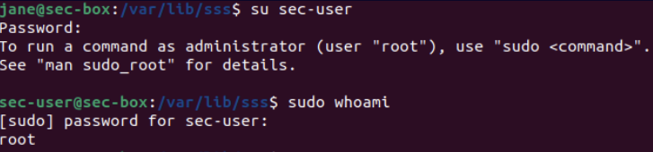
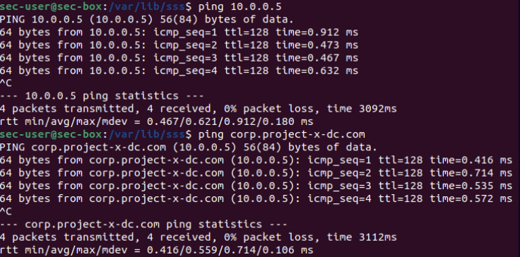
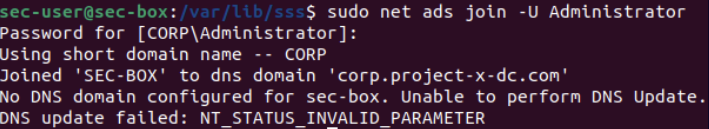

üîß Provisioning the Security Server
Instead of provisioning a brand new machine, I cloned my existing Ubuntu Desktop 22.04 client VM to create the security server. This saved time and ensured consistency across my lab environment.
I named the clone project-x-sec-box and made a few configuration changes to repurpose it for security monitoring.
üíª Why a Dedicated Security Server?
The idea behind a dedicated security server is to isolate performance-heavy tools from the rest of the environment. Security tools often consume a lot of CPU, RAM, and disk I/O — so running them on a separate system avoids slowing down user machines.
It also adds a layer of protection. These tools handle sensitive logs and scans, so keeping them isolated minimizes the attack surface. Plus, having one central place to manage alerts, logs, and threat data makes monitoring way more efficient.
üõ†Ô∏è Changing the Hostname & Creating a New Account
After cloning, the new VM still had the old hostname and user account. I updated the hostname from linux-client to sec-box by editing /etc/hostname and rebooting to apply the change.
Then I created a new user account:
- Username: sec-user
- Password: @password123! (default for this lab)
I gave sec-user sudo privileges and verified access with a quick:
sudo whoami

At this point, the box was customized and ready to be joined to the domain.
üåê Connecting to Active Directory
Since the cloned machine inherited all the domain join dependencies from the original Ubuntu client, I was able to join it to the domain with no issues.
First, I confirmed I could ping the domain controller (10.0.0.5) and the domain itself (corp.project-x-dc.com):

Then I used the following command to join the machine to Active Directory:
sudo net ads join -U Administrator

On the Domain Controller, I created the AD user account:
- Username: secuser@corp.project-x-dc.com
This was done using the Active Directory Users and Computers tool under the "Users" folder.
I then restarted the winbind service, verified the user appeared in the directory using:
wbinfo -u
And finally, I was able to successfully log in as secuser.